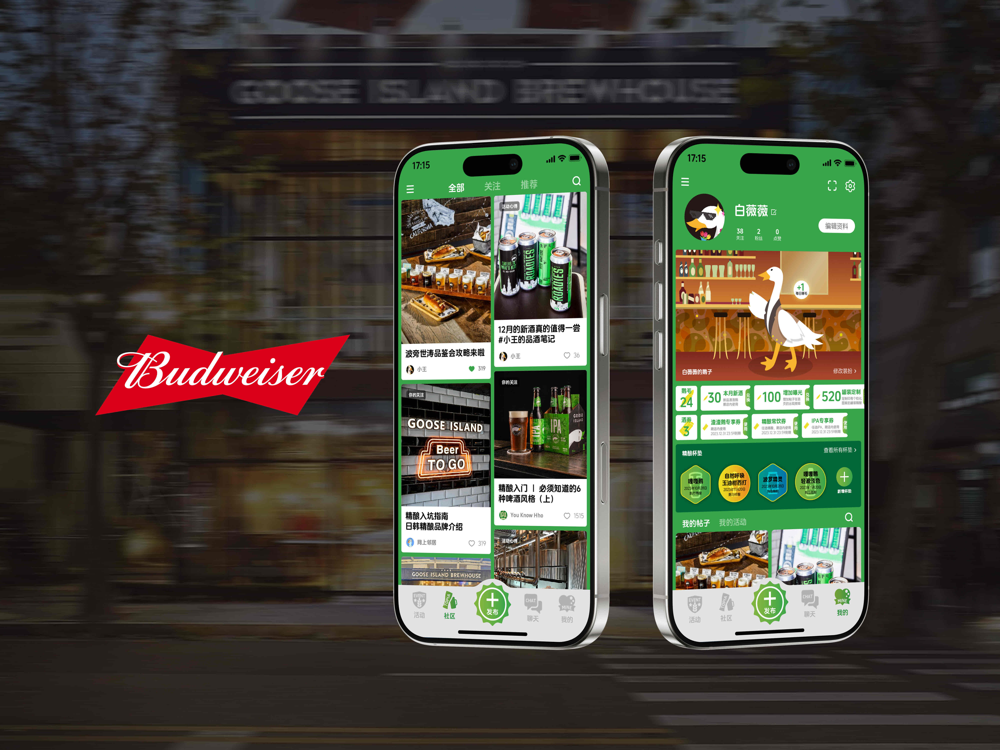
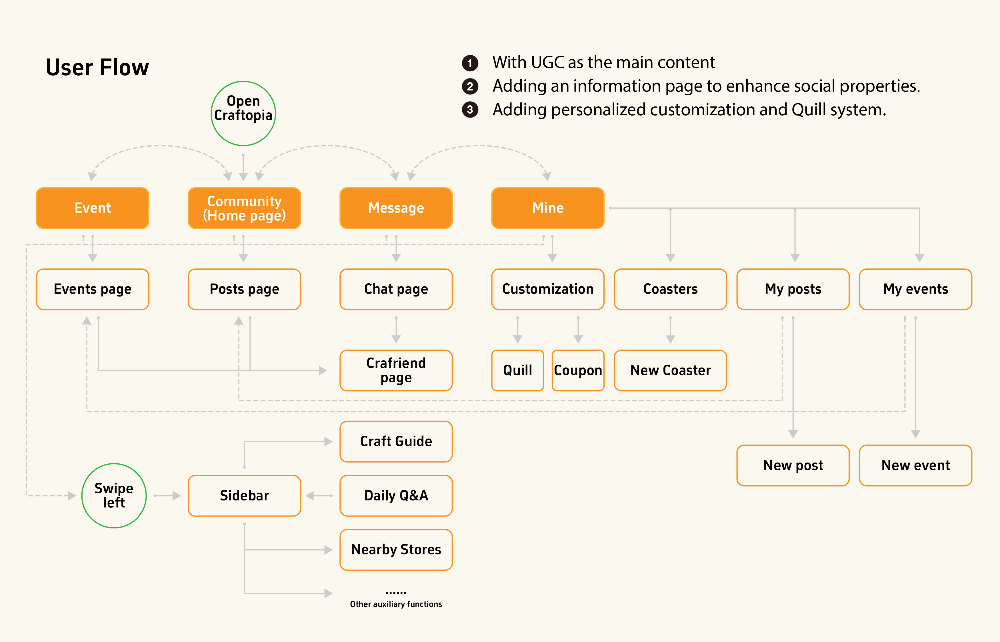

UX Design: Wang Yifan
Marketing: Wang Andy, Jiang Xixi
Market Research: William
Data Analysis: Zhao Liangxuan
3 Months · November, 2023
This is a project for the 5th SDG Open Innovation Marathon Challenge, co-hosted by x-lab and Budweiser 🍺. My team, composed of students from diverse majors, brainstormed on digitizing the beer industry's marketing. We focused on Budweiser Craft Beer entering the Beijing market, aiming to occupy consumer mindshare digitally.
Our goal is to devise a digital marketing strategy, such as an app or a mini-program, that seamlessly blends online and offline experiences. For those unfamiliar with the world of craft beer, we aim to increase awareness and reduce the entry barrier, thereby expanding the reach of craft beer culture and boosting offline consumption.
Budweiser aspires to promote and market the Goose Island craft beer brand in the Beijing region.
Unlike in southern cities like Shanghai, Nanjing, and Chengdu, craft beer is relatively niche in Beijing, with public knowledge about it being insufficient.
Goose Island
There's an actual goose 🪿 walking around in the store!
We conducted a field visit to the Goose Island in the Blue Harbor.
It's a two-story building, with a restaurant on the first floor and what seems more like a gathering place on the second floor. During the day, mainly on preparing for family meals, and a special children's set menu has also been introduced.
The customer profile for craft beer is quite broad and doesn't focus on a specific group. However, due to our status as students, we find it easier to access and interview the student population within universities. Through casual conversations, we ask them about their understanding of craft beer, and their offline experience of drinking craft beer. Based on their exposure to craft beer, they naturally fall into two categories: Craft Geek 😎 and Gateway 😧.

Craftopia Interface
Craftopia consists of two main sections: Events & Illustrated Guide. It also has the function of distributing online drink coupons.
Currently, Budweiser Shanghai has developed a mini-program named Craftopia. However, upon use, we found that Craftopia lacks a social and engaging aspect, currently serving merely as a platform for official information dissemination and offering opportunities to taste craft beers. We can add more functions that are suitable for the local culture of Beijing.
We've received enthusiastic support from Craft Geek. They suggest that our focus should be on attracting Gateways. Therefore, our persona and story are centered on guiding these newcomers in.
In our efforts to expand the craft beer market, we realized through the use of an Empathy Map that the goal is not just to drink, but to socialize. Only by deeply integrating craft beer brands with venues and social activities can we attract more participants and enhance customer retention.
Our platform, Craftopia, provides a fun and easy way for beginners to understand craft beer, through a variety of online and offline activities. This app will offer a space for enthusiasts to meet and share their experiences.

Bai Weiwei is a novice in the craft beer world, curious to learn more about craft beer. She hopes her interest will help her make more friends through shared beer tasting experiences.
We need to add social functions based on the Shanghai version, including the Community and Messages sections, and enrich the information in the Mine, adding personalized customization and Quill system.
In the Craftopia mini-program in Shanghai, a strong paper-tearing visual language was extensively used to create a sense of freedom and trendiness. However, the associated interface elements, such as various small icons, didn't match this style, making the interface visually cluttered and lacking a unified effect. Therefore, in the process of redesigning the visuals, the focus should be on maintaining a cool and consistent style.
In this project, we didn't just rely on existing resources or online data for problem analysis. Instead, we opted for direct interviews to understand the authentic needs of our target audience. During the chats, we realized their focus differed from ours. We presumed they visited the bar to drink, but most were actually there for social interaction.
Furthermore, the interviews provided a wealth of inspiration. For instance, we only learned about the behavior of collecting coasters through these interviews. We incorporated this action into our app design, thereby enhancing its uniqueness and fun factor.
Many times, I hope to complete the design work in one go, so that the performance in uniformity is better, and the time used is the shortest. However, when completing this simple small project, whether it is the structure, wireframe, or the final visual effect, many adjustments and attempts have been made, trying to find the most comfortable presentation. Although it often overturns the previous work, the effect is better than the last time through comparison. In the process of design iteration, I also generated a lot of new design thoughts and insights. In this process, I feel that I am making progress bit by bit, which is also an interesting process with a sense of achievement.
From the outset of our project, we established an online document and added all members to the group. Every meeting and each team member's periodic achievements were archived in this online document, which facilitated easy communication and review among us.